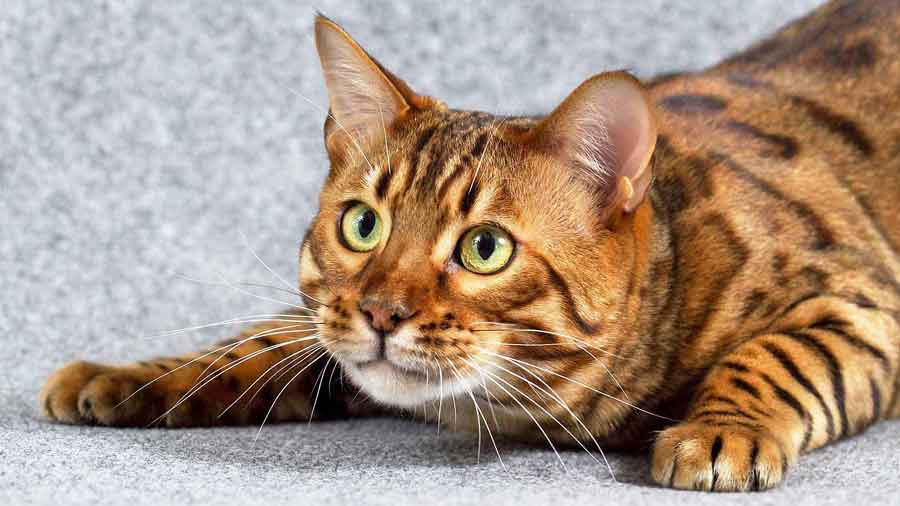
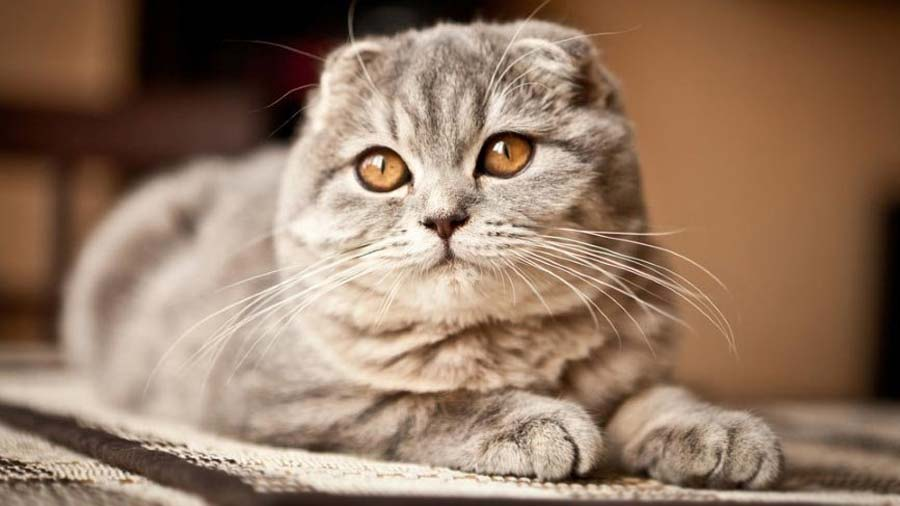

Cat's information

Abyssinian Cat
The Abyssinian is moderate looking in all aspects with smooth planes on her head. She has a gentle dip in the triangular head. Her rather large ears sit tilted forward on her head giving her an alert, aware look about her as if she is always paying attention to everything that is going on around her. Her eyes, which look large in her face, show the alertness and intelligence inherent in the breed.The coat on the Abyssinian is short and has tufts of hair in her ears. The coloring of the Abyssinian is very special. The majority of the fur has bands of color on each individual hair with the coat looking darker along the spine line. The color on her body softens and lightens under the neck and the underside of the cat and the insides of her legs.

Bengal Cat
The Bengal is a relatively new companion breed. It was created by crossing a domestic cat with a wild Asian Leopard Cat, with the goal being to transfer the wild cat’s exotic markings to a new, tame domestic breed. Today’s Bengals are long, sleek and muscular cats of medium size. They come in a number of different coat colors and patterns. All Bengals have spots, marbling and/or swirls, and many look remarkably like a tiny wild leopard. Bengal kittens are usually born with a fairly coarse, camouflage-patterned coat, which gradually changes to the adult color and characteristics. It can take up to one year for the mature leopard pattern to develop. It is preferred that Bengals have large spots arranged randomly in a horizontal flow, eventually developing into beautiful, peacock-like rosettes.
